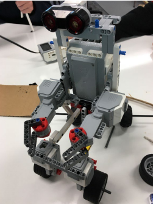
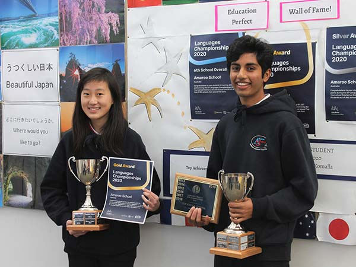

Home
Amaroo school was designed to cater for children from Kindergarten to Year 10. The first section of the school was opened on 19 May 2004 by Ms Katy Gallager, MLA and Minister for Education, Youth and Family Services. Our first intake of 154 students, in 2004, included those from Kindergarten to Year 5. This was extended to Year 8 in 2005 with Year 9 students starting in 2006 and Year 10 students in 2007. Since the incorporation of the Preschool in 2008, Amaroo School has operated as a Preschool to Year 10 school and presently has 1971 students.
Videos
Work

School Achievement

Made A Robot By Programing And Technical Skills
Got Selected To Go To Japan

/government-job-profile-school-principal-1669710-ee0e8cd82db941bda619432201b9f497.png)